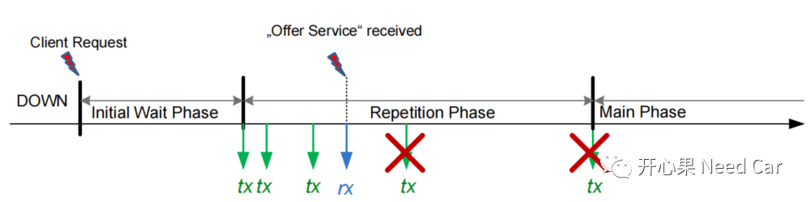
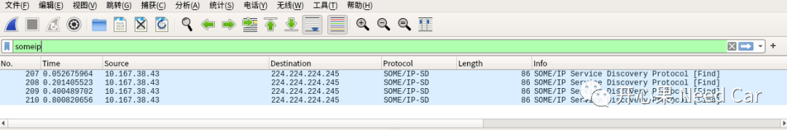
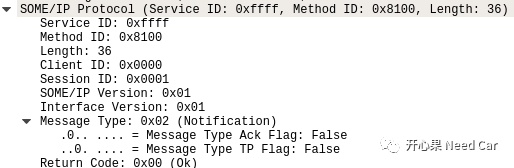
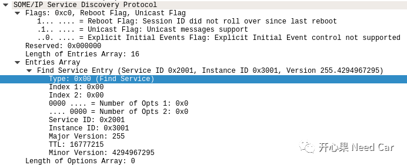

前言
汽车嵌入式开发中，实现SOA架构的方式多种多样，目前大多主机厂是基于SOME/IP的SOA实现。本文主要从SOME/IP-SD的协议、状态机及发送时序分析Find Service。提示：Find Service由Client发送。
Client状态机
在Autosar的ServiceDiscovery协议中规定Client包含Down和Requested两个主要状态机，其中Requested又包含Initial Wait Phase、Repeatition Phase、Main Phase三个子状态。

状态Down并不是说ECU没有启动，而是BswM没有请求服务，进而Find Service报文不被发送（直观理解就是没有发送Find Sevice报文）。
在Down状态下如果收到了其它节点发送的“OfferService”（即多播组里有节点将自身提供的服务告知组内其它节点），ECU节点应进行如下处理：
（1）SD模块要存储“OfferService”实例的状态信息
（2）对应的TTL应当设置为OfferServic发送的TTL，如果收到的TTL=0或者是StopOfferService，则表明接收到的服务不可用；如果TTL>0，内部Timer重置为接收到TTL，并开始计时。
Down阶段进入Requested阶段行为
（1）Down->Initial Phase
如果BswM在Down阶段请求服务（Client Request）,且在此阶段没有收到多播地址内其它节点的OfferService或者收到StopOfferService，则Client进入Initial Phase阶段，进入Initial阶段以后，random timer启动，随机值由配置的SdClientTimerInitialFindDelayMin和SdClientTimerInitialFindDelayMax决定（如SdClientTimerInitialFindDelayMin = 10ms,SdClientTimerInitialFindDelayMax = 100ms，random value = 10~100）。如果配置的SdClientTimerInitialFindDelayMax=0，Client直接进入Main Phase。
（2）Down->Main Phase
如果BswM在Down阶段请求服务（Client Request），在此阶段收到多播地址内其它节点的OfferService，且TTL>0，则Client直接进入Main Phase。
（3）Initial Phase ->Main Phase
如果在Initial Phase阶段收到多播地址内其它节点的OfferService，且TTL>0，Client将有如下行为：1.initial random timer取消计时 2.TTL重置为OfferService中的TTL 3.发送SubscribeEventgroup entry 4.Client进入Main Phase。注意，FindService报文不再往多播群组里发送，因为此时Client已经知道哪个ECU可以提供给它所使用的服务，可以使用单播进行点对点通信。
（4）Initial Phase->Repetition Phase
如果initial random timer计时到，且没有收到多播地址内其它节点提供的OfferService，Client将有如下行为：1.发送FindService Entry报文，注意这里是要发送到多播组内请求服务，即告诉其它ECU，当前节点需要的服务 2.SdClientTimerInitialFindRepetitionsMax>0进入Repetition Phase 3.SdClientTimerInitialFindRepetitionsMax=0进入Main Phase。
（5）Repetition Phase中FindService发送时序
如果在Repetition Phase没有收到OfferService，Client将发送FindServcie，假如配置参数如下所示：
SdClientTimerInitialFindRepetitionBaseDelay=200 SdClientTimerInitialFindRepetitionMax=3
实际的FindServcie报文发送如下所示：

即第一帧是10~100内随机发送，第二帧间隔200ms，第三帧间隔400ms,第四帧间隔800ms，之后进入Main Phase。
（6）Repetition Phase->Main Phase
如果在Repetition Phase收到OfferService,且TTL>0,Client将有如下行为：
取消repetition timer
重置TTL
发送SubscribeEventgroup entry，进入Main Phase，不再发送FindService报文
（7）Main Phase阶段行为
Client进入Main Phase阶段，一般来说不再发送FindService（降低总线负载），initial Phase和Repetition Phase阶段，Find Service中携带的TTL设置为0xFFFFFF，也就是说Client请求的服务进入Down阶段前一直有效，多播组内其它节点提供该服务时，Client会直接订阅。
Main Phase阶段的其它行为相对容易理解，不在此阐述。
Find Service报文的示例演示
对于Client的FindService报文，SOME/IP信息固定不动（如:Service ID:0xFFFF，Method ID:0x8100，Client ID:0x0000...），具体参数可按照Autosar规范配置，因为使用SOME/IP-SD，所以FindService是事件型报文，且Repeatition Phase阶段没有收到OfferService。
SOME/IP协议：

SOME/IP-SD协议，请求的Service ID:0x2001，Instance ID:0x3001。FindService对应Type:0x00。
